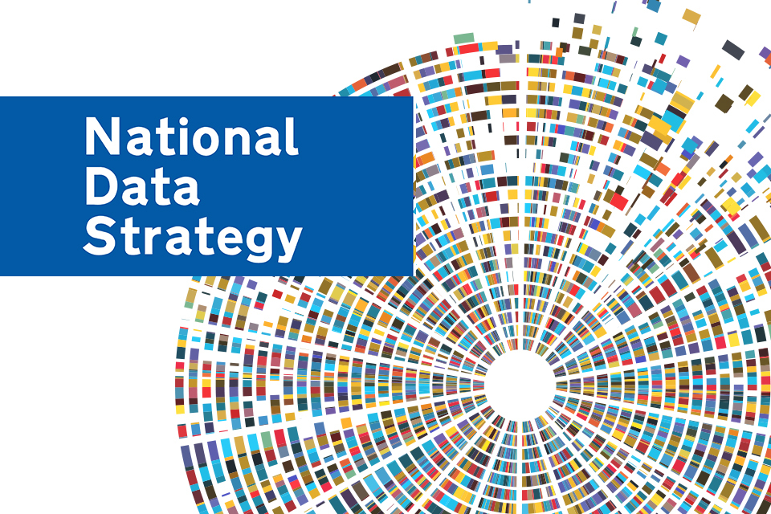
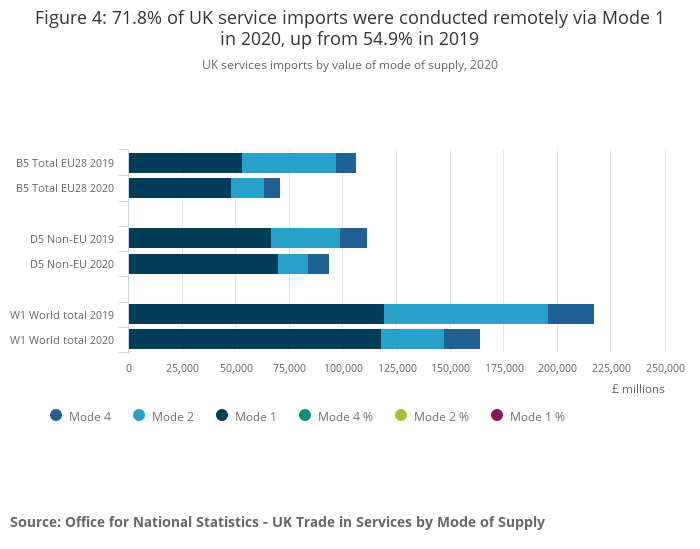
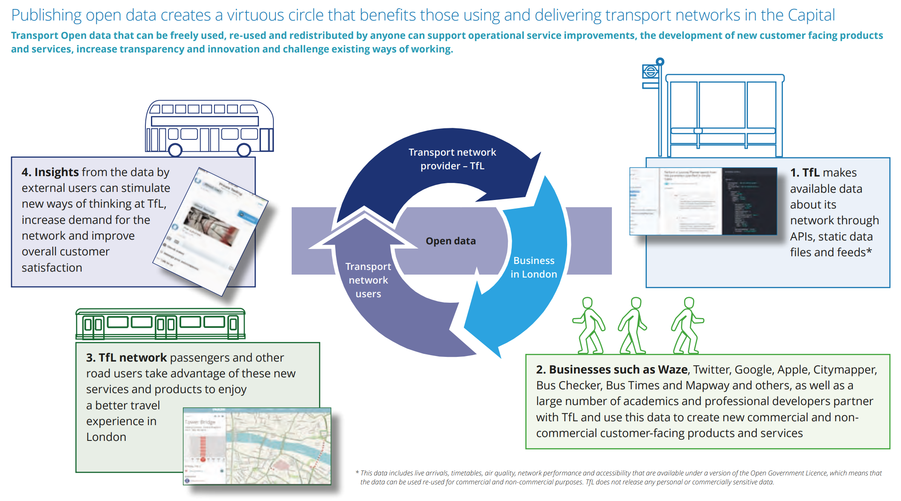
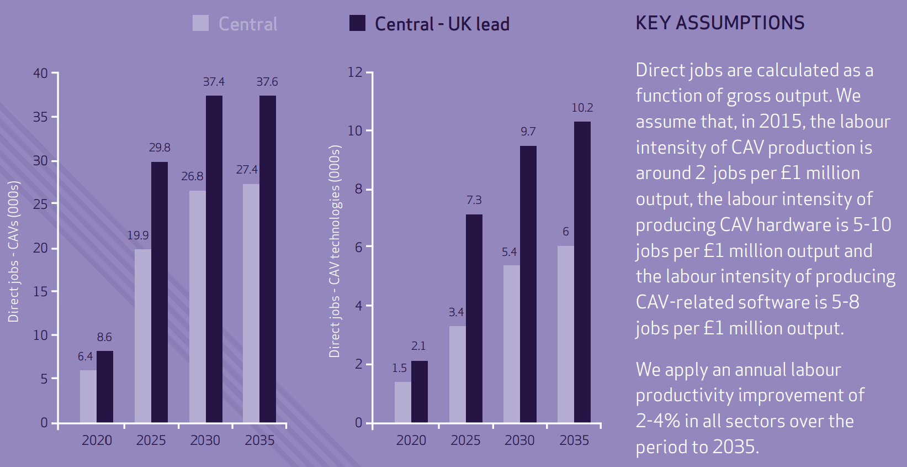

Session 2
Case Study: The UK Data Landscape
![]()

National Data Strategy Framework

Core pillars of the UK National Data Strategy
Data foundations
Data reaches its full potential only when it is high-quality, fit for purpose, and recorded in standardised formats.
It must be stored on modern, future-proof systems that ensure it is easy to find, access, combine, and reuse.
By raising data quality, we can use it more effectively and achieve stronger insights and improved outcomes.
Data skills
Making the most of data requires a strong pool of people with data skills.
This involves providing the right training and knowledge through the education system.
It also means ensuring individuals can keep developing and updating their data skills throughout their lives.
Data availability
Data has the greatest impact when it is easy to access, move, and reuse.
Achieving this involves encouraging better coordination and sharing of high-quality data among organisations in the public, private, and third sectors.
It also requires ensuring strong and appropriate protections for the secure international flow of data.
Responsible data
As we expand the use of data, it must be managed in a responsible manner.
Data use should always be lawful, secure, fair, ethical, sustainable, and accountable.
We must also ensure that these safeguards continue to enable innovation and research.
Five priority areas of action
Unlocking the value of data across the economy
Full potential of data is not being realised because important information is not reaching the people and places that need it.
The initial focus is on creating the right conditions for data to be usable, accessible, and widely available throughout the economy.
Ensure strong protection for individuals’ data rights and for the intellectual property of private enterprises.
Careful, evidence-based approach to design a clear policy framework that identifies the government interventions needed to achieve these goals.
Securing a pro-growth and trusted data regime
Data revolution to benefit businesses of all sizes.
Goal of creating a data regime that is easy for companies to work with and supports responsible, secure data use.
Reducing unnecessary regulatory uncertainty or risk to help innovators drive economic growth.
The public feels confident and empowered in how their data is used, including personal data.
Encourage competition and innovation while maintaining high data protection standards.
Build trust without placing unnecessary barriers on data use.
Transforming government’s use of data to drive efficiency and improve public services
Significant untapped potential in how government and public services use and share data to support people.
Improve how information is managed, used, and shared across government.
Requires a coordinated, whole-government approach that aligns around best practices and common standards for deriving value and insight from data.
Building a secure, connected, and interoperable data infrastructure with appropriate safeguards.
Developing strong data skills and leadership within the public sector is essential to unlock data’s full potential.
Ensuring the security and resilience of the infrastructure on which data relies
Systems that support data must be safe and secure.
Data use infrastructure is a critical national asset and should be protected from security threats and other risks, including service disruptions.
Although managing these risks is partly a commercial responsibility, the government must ensure that data and its supporting infrastructure are resilient to both existing and emerging threats.
Strengthening this resilience is essential for protecting and sustaining the growing economy.
Championing the international flow of data
Cross-border data flows drive global business operations, supply chains, and trade, supporting economic growth worldwide.
Data movement also provides social benefits, such as enabling salary payments and helping people stay connected across long distances.
Sharing health data can advance vital scientific research and support coordinated international responses to global health emergencies.
Promote strong domestic data practices and work with international partners to avoid unnecessary barriers created by national borders or fragmented regulations.
The data opportunity
Boosting productivity and trade - digitally-delivered services
Exports

Imports

Boosting productivity and trade - Transport for London open data

Boosting productivity and trade - UK government inputs
It has committed to raising research and development investment, majority of which is data-intensive, to 2.4% of GDP by 2027.
New institutions have been created, including the Centre for Data Ethics and Innovation (CDEI) and the Alan Turing Institute.
The government has introduced new data science and AI conversion courses.
It has undertaken pioneering work on “data trusts,” a new framework for data sharing.
Supporting new businesses and jobs - digital economy and transport sector
Gross value added (GVA)

Jobs

Increasing the speed, efficiency and scope of scientific research - NHS and clinical trials
data-driven clinical trial to tackle coronavirus - the RECOVERY trial.
using NHS electronic health records to identify and enable individuals to participate from across the UK.
clinical trials normally take months to set up but RECOVERY was set up in a matter of days.
12,000 patients from 176 NHS hospital organisations were enrolled in the trial with data being tracked and analysed.
Within 100 days, the trial identified the world’s first coronavirus treatment proven to save lives – Dexamethasone.
RECOVERY was supported by NHS DigiTrials and the Health Data Research UK.
Driving better delivery of policy and public services - Data First
Data First is a major data-linking programme run by the Ministry of Justice (MoJ) and funded by UK Research and Innovation.
It provides secure access to anonymised, linked administrative datasets from the MoJ and its agencies, with the ability to connect these to data from other departments (e.g., the Department for Education).
The programme helps researchers analyse how people interact with the justice system over time and identify factors linked to frequent court use.
It enables deeper insight into how individuals’ social, economic and educational backgrounds shape their justice system experiences and outcomes.
These insights will support more effective, evidence-based policymaking, improved services, and reduced costs.
Data is accessed through the ONS Secure Research Server, which meets high standards of security and data protection under the Five Safes framework.
Creating a fairer society for all - ONS domestic abuse statistics tool
The ONS domestic abuse publication combines data from multiple sources—including surveys, police records, government bodies, and support services—to provide a more complete national and local picture of domestic abuse.
Integrating these data sources helps improve understanding of victims’ experiences and assess how the criminal justice system responds to perpetrators.
An accompanying interactive data tool allows users to explore and compare statistics by police force area, helping inform the questions and priorities for agencies addressing domestic abuse.
These statistics also contribute to tracking the UK’s progress toward the UN’s 17 Sustainable Development Goals under the 2030 Agenda.

Tâm Anh Oxford Partnership